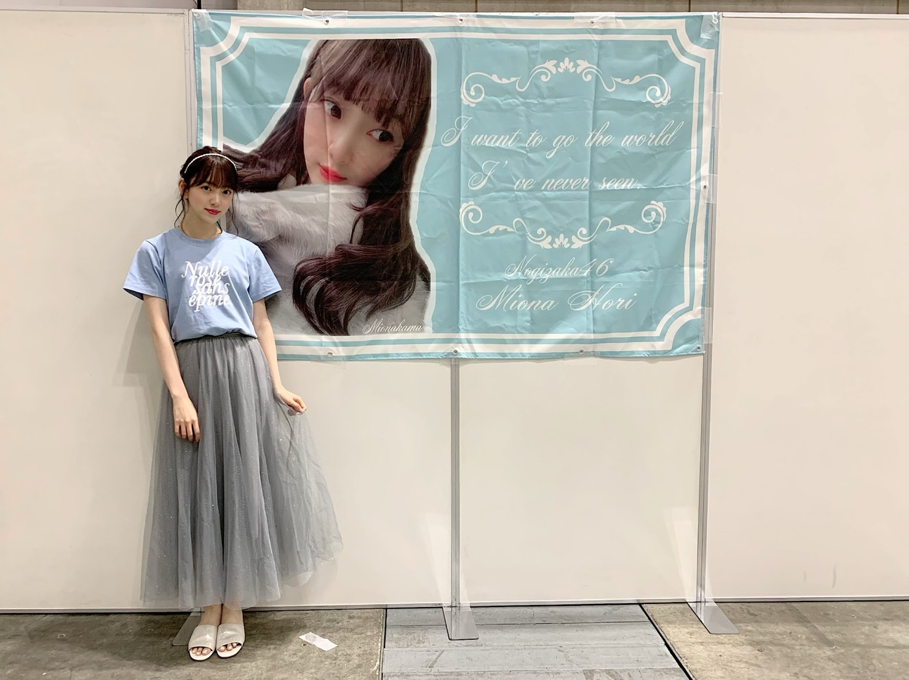

2019/0728Sun鼻がむずむずさん
やほう
ほこりかな？アレルギー反応が出てしまい、握手会途中でマスクを着用させていただきました。すみません。

ちょっと小洒落たオレンジにしてみた〜♡
ちなみに、私のサイリウムカラーはオレンジx白です！
ピッタマスク呼吸しやすくて日々愛用✨たすかる〜

tops ... epine
skirt ... manontokyo
shoes ... oriental traffic
だいすきなくすみブルーと白とキラキラ

ホットギミック ガールミーツボーイの感想ありがとうございます！
まだまだ上映していますので、ぜひ。
今日のメイクはリップとチークにポイントを置いています☺︎
クレドポーボーテ ルージュルミヌ10 スウィートアズキャンディーを塗ってから
クレドポーボーテ ブリアンアレーブルエクラ7 スターダストをたっぷり塗って、ピンクピンク✨させました！
チークはクリニークの13 ROSYpopです
クリニークのチークってかわいくてすき〜

今の髪色が個人的にすごくお気に入りです☺︎
ブラウンピンク なかんじでブラウンベースに赤とピンクを混ぜてもらって髪色抜けても金髪っぽくならないから柔らかいガーリーな印象になります
信号待ち中、カンちゃんに肩を組まれてニヤニヤ♡
では☺︎
2019/07/28 19:12
コメント(281)
ブログ更新ありがとう〜！
4枚目の写真の髪型かわいい♡
どうやってやるのかブログで教えてほしい〜！！
4枚目の写真の髪型かわいい♡
どうやってやるのかブログで教えてほしい〜！！
こんばんはお疲れさま☺
再び。
ショートをショーとって書いてまった(笑)
恥ずかしいや(笑)
ごめんね。
ホットギミック。
堀ちゃんは次はどんな作品に携わりたい？
また良い作品に出演出来たらエエね✨
再びではではまたね。
ほなね、堀ちゃん☺
水分補給忘れずにね。
再び。
ショートをショーとって書いてまった(笑)
恥ずかしいや(笑)
ごめんね。
ホットギミック。
堀ちゃんは次はどんな作品に携わりたい？
また良い作品に出演出来たらエエね✨
再びではではまたね。
ほなね、堀ちゃん☺
水分補給忘れずにね。
未央奈ちゃんブログありがとう！
アレルギー大丈夫？僕も結構ハウスダストとか埃とか結構苦手なんですよね笑
ピッタマスクいいですよね！でもピンクのピッタは初めて見ました(´⊙ω⊙`)
ピンクのマスク似合う人中々いないですよ！
可愛いです！さすが未央奈ちゃんですね(^^)
関東梅雨明けしたっぽいので、暑苦しい日が続くと思うので十分に水分とって、熱中症ならないようにこれからも頑張ってください！
アレルギー大丈夫？僕も結構ハウスダストとか埃とか結構苦手なんですよね笑
ピッタマスクいいですよね！でもピンクのピッタは初めて見ました(´⊙ω⊙`)
ピンクのマスク似合う人中々いないですよ！
可愛いです！さすが未央奈ちゃんですね(^^)
関東梅雨明けしたっぽいので、暑苦しい日が続くと思うので十分に水分とって、熱中症ならないようにこれからも頑張ってください！
乃木坂工事中見ました。
未央奈ちゃんが作ったやつ怖かったです
フィクションで良かったです。
もし本当にあった話だったら
ゾッとするね。
未央奈ちゃん大好きです
未央奈ちゃんが作ったやつ怖かったです
フィクションで良かったです。
もし本当にあった話だったら
ゾッとするね。
未央奈ちゃん大好きです
オシャレなマスク！
こんなのあるんですねー☆
こんなのあるんですねー☆
未央奈、ブログ更新ありがとう！
握手会お疲れ様でした
初握手ということで緊張したけど、とても楽しかったよ！
ゆっくり休んでね
握手会お疲れ様でした
初握手ということで緊張したけど、とても楽しかったよ！
ゆっくり休んでね
みおな〜♪
こんばんはっ！
蝉が鳴き始めたね〜
本格的に夏だ、暑い、、、
おまえのコメントは
いつもクドい！と言われそうだから
今日は軽めにコメントします
夏と言えば果物！
みんな桃と梨が好きだよね〜
ずっきゅん依存症も大好きです
でもこの2つの果物って
当たり外れがひどくない？
美味しいやつはすっごく美味しいけど
そうでないやつに当たった時の
がっかり感が半端ないです
あっ！
桃の種は食べたちゃダメだよ？
シアン化合物が含まれてて
誤って食べると青酸が発生しちゃうので
恐ろしや〜((((；ﾟДﾟ))))ｶﾞｸｶﾞｸﾌﾞﾙﾌﾞﾙ
さてさて
暑さに負けず明日も頑張りましょう
良き一日となりますように
こんばんはっ！
蝉が鳴き始めたね〜
本格的に夏だ、暑い、、、
おまえのコメントは
いつもクドい！と言われそうだから
今日は軽めにコメントします
夏と言えば果物！
みんな桃と梨が好きだよね〜
ずっきゅん依存症も大好きです
でもこの2つの果物って
当たり外れがひどくない？
美味しいやつはすっごく美味しいけど
そうでないやつに当たった時の
がっかり感が半端ないです
あっ！
桃の種は食べたちゃダメだよ？
シアン化合物が含まれてて
誤って食べると青酸が発生しちゃうので
恐ろしや〜((((；ﾟДﾟ))))ｶﾞｸｶﾞｸﾌﾞﾙﾌﾞﾙ
さてさて
暑さに負けず明日も頑張りましょう
良き一日となりますように
(」・ロ・)」 やっっほぉぉーーー！！！
ほぉーりぃーちゃぁぁーーーん！！！
こぉーんばぁーんわぁーーー！！！
ぴぃーんくのぉーー！
・・・ピンクのマスクもなかなか似合ってるよっ！
僕はマスクを付けると息苦しくなるから、全然身に着けないよ。
くれど・・・ぼーて・・・あんずきゃんでぃー？
なんか、メイクすごそう
ほぉーりぃーちゃぁぁーーーん！！！
こぉーんばぁーんわぁーーー！！！
ぴぃーんくのぉーー！
・・・ピンクのマスクもなかなか似合ってるよっ！
僕はマスクを付けると息苦しくなるから、全然身に着けないよ。
くれど・・・ぼーて・・・あんずきゃんでぃー？
なんか、メイクすごそう
こんにちは‼︎
ブログ更新、ありがとうございます♪
なんと、昨日の握手会でアレルギー反応が出てしまったんですね…
大丈夫ですか？
現地は、ちょっと埃っぽかったのかなあ。
自分は何事にも鈍感な人間なので何も感じませんでしたが(苦笑)、そうやっていろんなことを感じずに生きていることが、なんかちょっと申し訳なく感じたりもします。
いずれにせよ、お大事に…‼︎
昨日の私服も公開していただいて、ありがとうございます♪
昨日は未央奈に会えなかったので、こうやって見ることができて嬉しいです‼︎
くすみブルーのトップスと、ふわっとしたスカートと。
キラキラのカチューシャもいい感じ♪
昨日は会うことができなかったけど、再来週は会うことができます。
楽しみ楽しみ♪
あ、そうそう、24thシングルは…
未央奈は、さすがの競争率。
今のところ当選していません。
でも、まだチャンスはありますからね。
頑張ります‼︎
ではでは、また。
明日も未央奈にとっていい1日になりますように♪
ブログ更新、ありがとうございます♪
なんと、昨日の握手会でアレルギー反応が出てしまったんですね…
大丈夫ですか？
現地は、ちょっと埃っぽかったのかなあ。
自分は何事にも鈍感な人間なので何も感じませんでしたが(苦笑)、そうやっていろんなことを感じずに生きていることが、なんかちょっと申し訳なく感じたりもします。
いずれにせよ、お大事に…‼︎
昨日の私服も公開していただいて、ありがとうございます♪
昨日は未央奈に会えなかったので、こうやって見ることができて嬉しいです‼︎
くすみブルーのトップスと、ふわっとしたスカートと。
キラキラのカチューシャもいい感じ♪
昨日は会うことができなかったけど、再来週は会うことができます。
楽しみ楽しみ♪
あ、そうそう、24thシングルは…
未央奈は、さすがの競争率。
今のところ当選していません。
でも、まだチャンスはありますからね。
頑張ります‼︎
ではでは、また。
明日も未央奈にとっていい1日になりますように♪
マスクしてても、やっぱり、綺麗でしたよ。
やっぱり、目の角度かな？ライブの時に、未央奈の名前おもっいきり叫ぶからねぇ。お盆は、移動で券とってないから、つぎは、幕張の全握かな。それともナゴヤエクスポかな。見飽きたかも知れないけどまた行くからねぇ。
やっぱり、目の角度かな？ライブの時に、未央奈の名前おもっいきり叫ぶからねぇ。お盆は、移動で券とってないから、つぎは、幕張の全握かな。それともナゴヤエクスポかな。見飽きたかも知れないけどまた行くからねぇ。
ブログ更新ありがとう！
暑いけど、体調管理して、乗り切りましょう。
ブログ更新待ってます。
暑いけど、体調管理して、乗り切りましょう。
ブログ更新待ってます。
未央奈ちゃん、ブログ更新ありがとうございます！
握手会、お疲れ様でした！
そんなおしゃれな色合いのマスクなんてあるのですね！
知らなかったです。
とても素敵なお洋服ですね！
とても似合っていて、可愛いです
いつも可愛い写真を有り難うございます！！
未央奈ちゃん、大好きです
握手会、お疲れ様でした！
そんなおしゃれな色合いのマスクなんてあるのですね！
知らなかったです。
とても素敵なお洋服ですね！
とても似合っていて、可愛いです
いつも可愛い写真を有り難うございます！！
未央奈ちゃん、大好きです
握手会でも言わせてもらったけどやっぱ服もマスク似合ってるね笑
アレルギーの方はお大事に...
毎回のブログ更新ホントにありがとう！
アレルギーの方はお大事に...
毎回のブログ更新ホントにありがとう！
堀監督、こんばんは。
工事中の恐怖ドラマ見ました。まずフィクションで参加する志の高さが素晴らしいと思います。
ドア開かないときの怯えた表情と、お腹しか映らなくて状況が分からない時が良かったです。あとナレーションが上手かったのも印象的でした。
欲を言えば３人が叫んでる所が見たかったので、ディレクターズカット版として血だらけで逆立ちのグロテスクVer.もいつか公開して欲しいものです。
そういえばしれっと軍団を作ってたのも驚きでした。ホーリーホラーズの今後にも注目したいと思います。
夏本番なので、好きなもの沢山食べて夏乗り切ってくださいね。いつも応援してます。
工事中の恐怖ドラマ見ました。まずフィクションで参加する志の高さが素晴らしいと思います。
ドア開かないときの怯えた表情と、お腹しか映らなくて状況が分からない時が良かったです。あとナレーションが上手かったのも印象的でした。
欲を言えば３人が叫んでる所が見たかったので、ディレクターズカット版として血だらけで逆立ちのグロテスクVer.もいつか公開して欲しいものです。
そういえばしれっと軍団を作ってたのも驚きでした。ホーリーホラーズの今後にも注目したいと思います。
夏本番なので、好きなもの沢山食べて夏乗り切ってくださいね。いつも応援してます。
おはよう、みおな❗️❗️(笑)
体調は大丈夫かな❓️
え❓️
大丈夫❓️
なら、今日、遊ぶ❓️(笑)
なんちゃって・・・(笑)
あー、俺も、みおなと肩組んで、信号待ちしたーい❗️❗️(笑)
ゆうべは、モバメもありがとう❗️❗️(笑)
ん～、このマスクしてるみおな、かわいいね・・・
白いマスクと合わせて、みおなのサイリウムカラーの出来上がりだね❗️❗️(笑)
とは言え、健康が１番なので・・・
睡眠もしっかり取ろうね❗️(笑)
睡眠不足も、みおなにとっては、体調を崩す要因のひとつだと思ってるから・・・
仕事の合間、少しの仮眠でも、気分転換にもなるし・・・
今年の夏は、なんだか短そう・・・
楽しい夏にしようね❗️❗️(笑)
それじゃ、またね❗️❗️(笑)
体調は大丈夫かな❓️
え❓️
大丈夫❓️
なら、今日、遊ぶ❓️(笑)
なんちゃって・・・(笑)
あー、俺も、みおなと肩組んで、信号待ちしたーい❗️❗️(笑)
ゆうべは、モバメもありがとう❗️❗️(笑)
ん～、このマスクしてるみおな、かわいいね・・・
白いマスクと合わせて、みおなのサイリウムカラーの出来上がりだね❗️❗️(笑)
とは言え、健康が１番なので・・・
睡眠もしっかり取ろうね❗️(笑)
睡眠不足も、みおなにとっては、体調を崩す要因のひとつだと思ってるから・・・
仕事の合間、少しの仮眠でも、気分転換にもなるし・・・
今年の夏は、なんだか短そう・・・
楽しい夏にしようね❗️❗️(笑)
それじゃ、またね❗️❗️(笑)
堀さん、こんにちは♪
久しぶりにコメントします。
乃木坂工事中を見ました。
堀さんの作品を見ました。
空き家のような所に３人で行ったら
４人目の知らない人が写真に写ってたのですね。
堀さんはホラーの映画に興味があるのですね。
僕は昔、テレビの映像の井戸の中から髪の
長い女性が出てきてテレビの画面から出てくる
ホラー映画を見ました。
信号を待ってる時にカンちゃんという方に
肩を組まれたのですね。
堀さんはいろいろな人との付き合いが
あるのですね。
湯本さんや荻野さん、弘中さんなどです。
僕は堀さんと手をつないで
信号を待ちたいです☆
コスメは僕も好きです。
メイクはしないのですが
テレビでコスメのＣＭを見るのが好きです。
クレドポーボーテというコスメがあるのですね。
堀さん、体調に気を付けて
お仕事頑張ってください☆
ではまたコメントしますね☆
久しぶりにコメントします。
乃木坂工事中を見ました。
堀さんの作品を見ました。
空き家のような所に３人で行ったら
４人目の知らない人が写真に写ってたのですね。
堀さんはホラーの映画に興味があるのですね。
僕は昔、テレビの映像の井戸の中から髪の
長い女性が出てきてテレビの画面から出てくる
ホラー映画を見ました。
信号を待ってる時にカンちゃんという方に
肩を組まれたのですね。
堀さんはいろいろな人との付き合いが
あるのですね。
湯本さんや荻野さん、弘中さんなどです。
僕は堀さんと手をつないで
信号を待ちたいです☆
コスメは僕も好きです。
メイクはしないのですが
テレビでコスメのＣＭを見るのが好きです。
クレドポーボーテというコスメがあるのですね。
堀さん、体調に気を付けて
お仕事頑張ってください☆
ではまたコメントしますね☆
チャァオ～～!☆彡
可愛いぃ～おちゃん、こんにちは～～～⤴️⤴️❕❤️❤️❤️❤️❤️笑顔
今日も暑いですねぇ～～～⤴️⤴️❕❤️❤️❤️❤️❤️笑顔
最近、自分の体に気がついたことがあるよ～～⤴️⤴️❕笑顔
常に腸のアレルギーを抑える薬を飲むんだけど～～
その日(4、5ヶ月前から)に必ず、薬による皮膚アレルギー(水疱のようなぁ)が出るんだけど～～
先週金曜日あたりから、毎日(今も)900ミリリットルの無塩野菜ジュースを飲んでたら～～
薬による皮膚アレルギー(水疱の様な)が出なくなったよぉ❕❤️❤️❤️❤️❤️笑顔
不思議だよ❕笑顔
みおちゃん、おいらこれから毎日１本飲むよぉ～～～⤴️⤴️❕❤️❤️❤️❤️❤️笑顔
(塩入れてぇ❕笑顔)
やっぱり、若さを保ちたいしさぁ～❕笑顔
みおちゃんもいつまでも、いつまでも綺麗でいてねぇ～～⤴️⤴️❕❤️❤️❤️❤️❤️笑顔
暑いから、大好きなぁ梅干しで塩分摂取を忘れずにねぇ❕❤️❤️❤️❤️❤️笑顔
(おいら、先週金曜日～日中から深夜まで熱中症かかったよぉ❕笑顔、塩分とり忘れてぇ❕笑顔)
またねぇ❕❤️❤️❤️❤️❤️笑顔
☆大人しい、おすまし！より☆彡
こんにちは
欅坂の土生ちゃんに会ったのですね～
モデルさんみたいな可愛いらしさと、
中性的でもある美しさに牽かれますよ☆
天気の子を先日に観てきましたよー！
東京の天気とリンクしてて驚きました♪
映像が美しく、明るいだけでない話が、
ホットギミックの世界観と共通でした♡
モンゴル800さんの「あなたへ」を、
今聴いてますよ～☺
欅坂の土生ちゃんに会ったのですね～
モデルさんみたいな可愛いらしさと、
中性的でもある美しさに牽かれますよ☆
天気の子を先日に観てきましたよー！
東京の天気とリンクしてて驚きました♪
映像が美しく、明るいだけでない話が、
ホットギミックの世界観と共通でした♡
モンゴル800さんの「あなたへ」を、
今聴いてますよ～☺
堀さんの方が美しいと思います。堀さんはセンスがいいですね、どんな服も似合うし、おしゃれして、みんなを楽しませてくれる、品のある人の生き方を、されているので、晴れ女なんですね、それに、堀さんは、さわやかな、風のようです。あと、逆境の時に、つぶれる人と、つぶれないで伸びる人といると本で読んだことが、あります。堀さんは、逆境の時に実力をつけて、伸びるタイプだと思います。歴史の英雄タイプですね、堀さんが、明るく楽しく生きると、闇に光が照らされます。そして地球は守られる。堀さんは地球防衛軍です。スーパーヒーロー女神様です。
チャァオ～～!☆彡
みおちゃん❕笑顔・・・
可愛いぃ～～～⤴️⤴️❕❤️❤️❤️❤️❤️笑顔
可愛いぃ～～～⤴️⤴️❕❤️❤️❤️❤️❤️笑顔
めっちゃ
可愛いぃ～～～⤴️⤴️❕❤️❤️❤️❤️❤️笑顔
☆大人しい、おすまし！より☆彡
堀ちゃんの事を未央奈ちゃん・みおちゃんって呼んでみたいけど、なんか緊張して、堀ちゃんって呼んじゃいます！笑
夏の季節関係なく、ホラー映画は見てます。
あと！テレビでも怖いのがあると必ず見るよー
夏の季節関係なく、ホラー映画は見てます。
あと！テレビでも怖いのがあると必ず見るよー
こんにちは
乃木坂工事中面白かったです。
夏って感じだねぇ
早く続きが観たいなって思います。
観ていて知ったんですが、堀ちゃんは
ホラー映画好きなんですか。
日本の映画の『女優霊』って知って
いますか？
怖いっすよ
視線をそらしながら、チラチラ観ていたので
内容は思い出せませんが映像の雰囲気が
怖かったです。
もし気が向いたら観てみてください
暑いから体には気をつけて
じゃあ
乃木坂工事中面白かったです。
夏って感じだねぇ
早く続きが観たいなって思います。
観ていて知ったんですが、堀ちゃんは
ホラー映画好きなんですか。
日本の映画の『女優霊』って知って
いますか？
怖いっすよ
視線をそらしながら、チラチラ観ていたので
内容は思い出せませんが映像の雰囲気が
怖かったです。
もし気が向いたら観てみてください
暑いから体には気をつけて
じゃあ
堀ちゃん、大好きだよー
堀ちゃん、大好きだよー
2
ブログ更新有難う
ブログ更新有難う
ホットギミック延長おめでとう！
天気の子みたいな〜〜〜〜。
肘売った時の洋服可愛すぎかよ‼️
なんでも洋服似合う所うらやましすぎるんだけど笑笑
全握まであと少しやね、体調管理気をつけてお仕事頑張って下さい
(フラミンゴ洋服・たくとぉ)
天気の子みたいな〜〜〜〜。
肘売った時の洋服可愛すぎかよ‼️
なんでも洋服似合う所うらやましすぎるんだけど笑笑
全握まであと少しやね、体調管理気をつけてお仕事頑張って下さい
(フラミンゴ洋服・たくとぉ)
未央奈が前にグレーのピッタマスクつけてたから同じの買って使ってたの！！
またピンクバージョンも買っちゃおうかな〜❤️
もうこのマスクのCMやってほしいぐらい！めちゃ似合ってる！！！
体調には気をつけて
応援してます❤️
またピンクバージョンも買っちゃおうかな〜❤️
もうこのマスクのCMやってほしいぐらい！めちゃ似合ってる！！！
体調には気をつけて
応援してます❤️
3
堀おつ
堀おつ
ニヤニヤ未央奈可愛い(ﾉ≧▽≦)ﾉ
オレンジ×白 もちろん覚えたよ
髪色かわいい
髪色かわいい


ホットギミックの感想もちゃんと伝えることが出来て本当に良かったよ。
未央奈の笑顔はまじで癒されるよ。